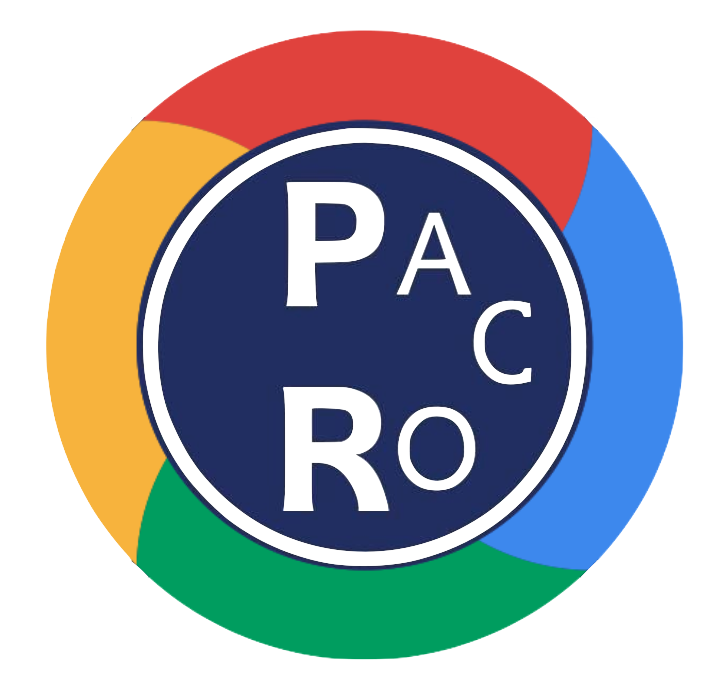
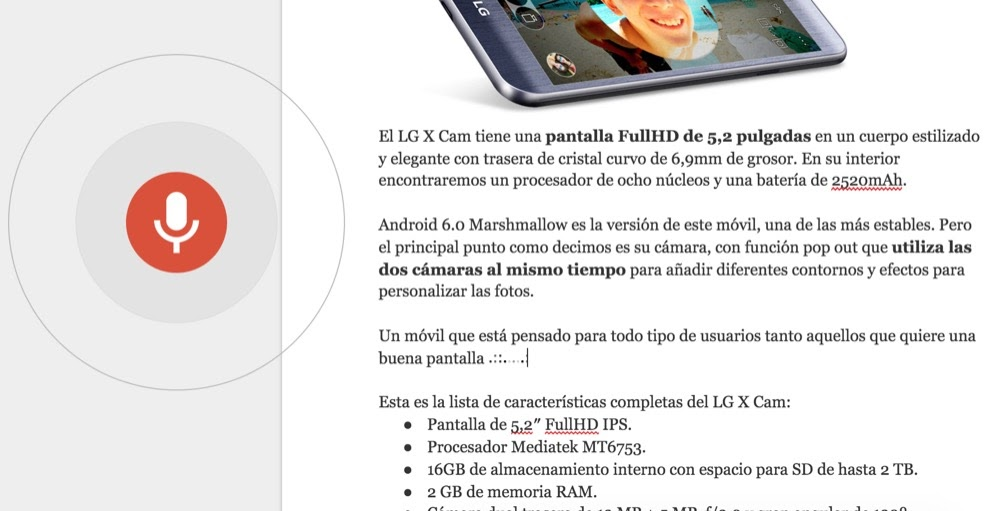
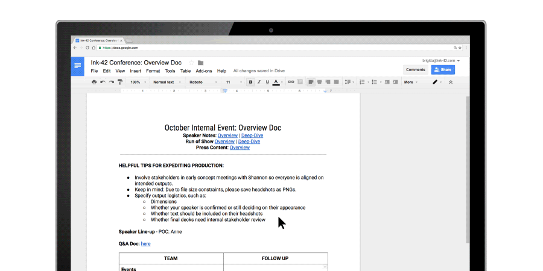
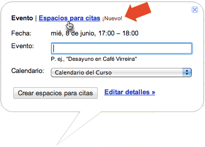

|
|  |


El primer truco para Google Docs que os traemos es el de poder escribir símbolos extraños. Para ello debemos abrir un documento > Insertar > Caracteres especiales en la barra superior. Al hacer clic se abre un cuadro y allí podemos elegirlo.
Pero ojo, porque no acaba aquí. Google Docs nos permite dibujar un símbolo con el ratón o el táctil y lo reconocerá y nos ofrecerá alguno similar. Es perfecto si queremos encontrar ese símbolo raro y no queremos estar pasando varios minutos buscando.

Cuando escribimos un texto es importante añadirle material multimedia para complementar la información. Normalmente añadimos imágenes que tenemos guardadas en nuestro ordenador pero es menos utilizada la función de búsqueda de imágenes que incorpora Google Docs.
Al insertar una imagen si vamos al apartado búsqueda podremos encontrar muchísimas y además establecer que únicamente sean las que tienen licencia de uso abierta.

Muchos estamos acostumbrados a escribir largos textos pero a veces es mucho más rápido y cómo utilizar la voz. Recomendamos a todos que probéis la escritura por voz. La encontraréis en Herramientas > Escritura por voz. Una vez ahí podemos empezar a hablar e incluso si por ejemplo decimos «punto», lo entenderá como el símbolo ortográfico. También entiende comandos como «nuevo párrafo».

Una de las ventajas de Google Docs respecto a Office u otras suite de ofimática es la facilidad con la que podemos compartir nuestros documentos y entre varias personas editar el texto que estemos realizando.
Deberemos pulsar el botón azul en la esquina superior derecha y podemos o añadir personas o directamente copiar el enlace y enviarlo para que cualquier persona pueda ver el texto. Sin duda una de las funciones más prácticas y útiles de Docs.
Compartir un único archivo
- En un ordenador, ve a Drive o a Documentos
- Haz clic en el archivo que quieras compartir.
- Haz clic en Compartir o en el icono Compartir
 .
.
Compartir con determinadas personas
- Selecciona el archivo que quieras compartir.
- Haz clic en Compartir o en el icono Compartir .
- En "Compartir con personas y grupos", introduce la dirección de correo electrónico con la que quieras compartir el archivo.
- Importante: Puedes compartir solo con los miembros de la UJA (usando tu ciuenta de la UJA)
- Para cambiar qué pueden hacer los usuarios con tu documento, a la derecha, haz clic en la flecha hacia abajo
 Lector, Comentador o Editor.
Lector, Comentador o Editor. - Elige qué quieres notificar a las personas.
- Si quieres notificar a las personas con las que has compartido un documento, marca la casilla junto a Notificar a las personas. Si quieres avisar a los usuarios de que compartes un archivo con ellos, cada dirección de correo electrónico que introduzcas se incluirá en el correo.
- Si no quieres notificar a las personas, desmarca la casilla.
- Haz clic en Compartir o en Enviar.
Compartir un enlace al archivo
Puedes enviar un enlace para que quienes lo tengan puedan usar el archivo.
Compartir un archivo y colaborar con 100 personas (o más)
Hasta 100 personas pueden ver, editar o comentar un archivo de Documentos, Hojas de cálculo o Presentaciones de Google al mismo tiempo. Si hay más de 100 personas viendo un archivo, solo pueden editarlo el propietario y algunos usuarios con permisos de edición.
- Si necesitas que muchas personas vean un archivo al mismo tiempo, publícalo y crea un enlace para compartirlo. Luego puedes dar permiso para editarlo o comentarlo a quienes lo necesiten. Consulta cómo publicar un archivo.
Publicar un archivo
- Arriba, haz clic en Archivo
 Publicar en la Web.
Publicar en la Web. - Elige una opción de publicación:
- Haz clic en Publicar.
- Copia la URL y envíasela a cualquier persona que quieras que vea el archivo. O bien, insértala en tu sitio web
Opciones de comentarios
Ver todos los comentarios
- En un teléfono o tablet Android, abre un archivo en la aplicación Documentos, Hojas de cálculo o Presentaciones de Google.
- En la parte superior de la pantalla, toca Comentarios .
Añadir comentarios
- En un teléfono o tablet Android, abre un archivo en la aplicación Documentos, Hojas de cálculo o Presentaciones de Google.
- Selecciona el texto o la celda y toca Añadir comentario o Comentar.
- Añade el texto.
- Toca Comentar.
Responder a los comentarios
Después de tocar un comentario específico, puedes:
- Editar un comentario: toca Editar
 . Haz los cambios y toca Guardar.
. Haz los cambios y toca Guardar. - Responder a un comentario: en la parte inferior, toca Responder.
- Resolver un comentario: encima del comentario, toca Resolver.
- Ir de un comentario a otro: desliza el dedo hacia la derecha o hacia la izquierda.
- Eliminar un comentario: toca Editar y, después, toca el icono de la papelera
 .
. - Volver a la vista de edición: en la esquina superior derecha, toca CERRAR o el icono de cerrar
 .
.
Enviar un comentario a una persona específica
Para asegurarte de que una persona vea un comentario, puedes añadirla y recibirá una notificación por correo electrónico con tu comentario.
- En un teléfono o tablet Android, abre un archivo en la aplicación Documentos, Hojas de cálculo o Presentaciones de Google.
- Escribe un comentario.
- En cualquier parte del comentario, añade el nombre. Cuando aparezca la persona correcta, toca su nombre. También puedes añadir la dirección de correo electrónico de la persona que quieres que vea el mensaje.
- Toca COMENTAR.
Aceptar o rechazar un cambio sugerido
Si alguien sugiere un cambio en un documento de tu propiedad, puedes aceptarlo o rechazarlo. Esta función solo está disponible en Documentos de Google.
- En un teléfono o tablet Android, abre un documento en la aplicación Documentos de Google.
- Para ver la sugerencia, toca Sugerencia.
- Toca Aceptar o Rechazar.
Nota: Si cambias de opinión sobre una sugerencia que has aceptado, toca Deshacer.

Puedes utilizar los comentarios para asignar tareas con tu cuenta del trabajo o de tu centro educativo.
Asignar una tarea en un comentario
- En un teléfono o tablet Android, abre un archivo en la aplicación Documentos, Hojas de cálculo o Presentaciones de Google.
- Resalta el texto, las imágenes, las celdas o las diapositivas que quieras comentar.
- Para añadir un comentario, toca Insertar
 .
. - Toca Comentar.
- Escribe tu comentario.
- En alguna parte del comentario, escribe @ o + justo delante de la dirección de correo electrónico de la persona a la que quieras asignárselo.
- Toca la casilla situada junto a "Asignar a [nombre]".
- Toca Asignar. La persona a la que hayas asignado la tarea recibirá un mensaje de correo electrónico.
Reasignar una tarea
- En un teléfono o tablet Android, abre un archivo en la aplicación Documentos, Hojas de cálculo o Presentaciones de Google.
- Toca el texto que tenga un comentario.
- Toca Ver comentario.
- Toca Responder.
- Escribe tu comentario.
- En alguna parte del comentario, escribe @ o + justo delante de la dirección de correo electrónico de la persona a la que quieras asignárselo.
- Toca la casilla situada junto a "Reasignar a [nombre]".
- Toca Enviar . La persona a la que hayas asignado la tarea recibirá un mensaje de correo electrónico.
Marcar una tarea como completada
- En un teléfono o tablet Android, abre un archivo en la aplicación Documentos, Hojas de cálculo o Presentaciones de Google.
- En la esquina superior derecha del comentario, toca Marcar como completada.
Ver los seguimientos de un documento
- En un teléfono o tablet Android, abre la aplicación Documentos, Hojas de cálculo o Presentaciones de Google.
- Toca el número situado en la esquina superior derecha de un documento. Si no ves ningún número, significa que no hay seguimientos para ese documento.
- Puedes ver el número de:
- Tareas abiertas
- Sugerencias abiertas
- Para ir a la primera tarea o sugerencia, toca una opción de la lista.
- Para cerrar el menú, toca el número.
Podemos lograr la generación automática del PDF para el documento que queramos, solamente agregando un código a la dirección del documento.
Solamente debemos ir al botón azul de COMPARTIR

Damos click en la palabra Avanzado

En la sección de Enlace para compartir, tomamos la dirección del documento, y vemos que termina con edit/?usp=sharing
Si cambiamos esa terminación por export?format=pdf,(puedes copiar y pegar la dirección en otro lado para que la puedas editar cómodamente), tendremos listo nuestro link para compartir. Debe quedar algo parecido a esto:
https://docs.google.com/document/d/1YUG9-nkKxmg-c_W1sMRxYf01s/export?format=pdf
Si compartes el link de esa manera, Google Docs automáticamente generará un PDF para descarga, siempre con los últimos cambios que tengas hasta ese momento.
- En Drive, abre el archivo.
- Haz clic en Compartir.
- Si el archivo no se ha compartido aún, compártelo.
- Haz clic en Avanzado.
- Coloca el cursor sobre el nombre de la persona y haz clic en Establecer caducidad
 .
. - Cambia la fecha de vencimiento del acceso.
- Haz clic en Guardar cambios y, a continuación, en Listo.
Nota: No puedes poner la fecha de vencimiento en el día en el que estás. Si tienes que restringir el acceso de inmediato, deja de compartir el archivo.
Paso 1: Crea una presentación
Para crear una presentación:
- Abre la pantalla de inicio de Presentaciones en slides.google.com.
- Arriba a la izquierda, en "Crear una presentación", haz clic en Nueva . Al hacerlo, se abrirá una presentación nueva.
También puedes crear presentaciones desde la URL slides.google.com/create.
Paso 2: Edita una presentación y dale formato
Puedes añadir texto, imágenes o vídeos a una presentación, editarlos o darles formato.
- Insertar y organizar texto, formas y líneas
- Añadir, eliminar u organizar diapositivas
- Cómo añadir animaciones a una diapositiva
Paso 3: Comparte contenido y trabaja con otras personas
Puedes compartir carpetas y archivos con otras personas y darles permiso para que los vean, editen o comenten.

Crea y edita de forma simultánea presentaciones con tu equipo, directamente desde el navegador. Colabora en propuestas empresariales, presentaciones de proyectos, módulos de formación y mucho más. Todos los cambios se guardan automáticamente. |
1. Añade y edita contenido de tus diapositivas.

2. Añade y organiza diapositivas.
Crear diapositivas: en la barra de herramientas, haz clic en Nueva diapositiva . También puedes seleccionar la flecha hacia abajo y elegir el diseño de la nueva diapositiva. | |
| Mover diapositivas: arrastra la diapositiva que quieres mover a una posición diferente en la presentación. Para mover varias diapositivas a la vez, mantén pulsada la tecla Ctrl y haz clic en las diapositivas para seleccionarlas antes de arrastrarlas. |
| Eliminar diapositivas: haz clic con el botón derecho en una diapositiva y selecciona Eliminar. |
| Duplicar diapositivas: haz clic con el botón derecho en una diapositiva y selecciona Duplicar diapositiva. |

3. Trabaja con distintas copias y versiones de tu presentación.
Importar diapositivas: añade a la presentación diapositivas de otra presentación.
Hacer una copia: crea un duplicado de la presentación. Esta opción resulta muy útil para crear plantillas.
Descargar como: descarga la presentación en otro formato, como Microsoft® PowerPoint® o Adobe® PDF.
Enviar por correo electrónico como archivo adjunto: envía una copia de la presentación por correo electrónico.
Historial de versiones: consulta todos los cambios que se han hecho en la presentación o vuelve a una versión anterior.
Publicar en la Web: publica una copia de tu presentación como página web o insértala en un sitio web.
4. Haz clic en Compartir para compartir la presentación y, a continuación, elige lo que pueden hacer los colaboradores, que también recibirán una notificación por correo electrónico.
Compartir o dejar de compartir contenido | Editar contenido directamente | Añadir comentarios | |
Editor | ✔ | ✔ | ✔ |
Comentador | ✔ | ||
Lector |
5. Colabora con tu equipo en tiempo real.
- En un ordenador, abre una presentación en Presentaciones de Google.
- Abajo a la derecha, haz clic en Explorar .
- Por lo general, te aparecerán sugerencias de diseños que pueden ayudarte a terminar tu trabajo. Haz clic en el que prefieras.
- En un ordenador, abre una presentación en Presentaciones de Google.
- Abajo a la derecha, haz clic en Explorar .
- En la parte de arriba, busca un documento, una presentación, una imagen, un gráfico o una página web. Los resultados de búsqueda se muestran en categorías:
- Cloud Search: busca contenido en Google Drive, Gmail y muchas aplicaciones más. Para filtrar por tipo, haz clic en Filtrar . Puede que tu administrador haya desactivado esta opción. En ese caso, puedes buscar en Google Drive.
- Web: información de la Web relacionada con tu presentación.
- Imágenes: imágenes de la Web relacionadas con tu presentación.
- Drive: documentos guardados en tu Google Drive.
- Añade un elemento:
- Añadir una imagen o un gráfico: haz clic en el elemento que quieras añadir. Arriba, haz clic en Insertar.
- Añadir una nota al pie: sitúa el cursor sobre un resultado de búsqueda. Haz clic en Citar como nota al pie .
- Añadir un enlace: sitúa el cursor sobre un resultado de búsqueda. Haz clic en Insertar enlace .
Nota: Para ver más gráficos o imágenes desde un documento, haz clic en "Ver más contenido" debajo de la presentación o del documento.
- En un ordenador, abre una presentación en Presentaciones de Google.
- Haz clic en el texto o en la imagen a los que quieras añadir una animación.
- Haz clic en Insertar
 Animación.
Animación.
- En un ordenador, abre una presentación en Presentaciones de Google.
- A la izquierda, haz clic en la diapositiva a la que quieras ir.
- Haz clic en Diapositiva Cambiar transición.
Para mostrar una presentación a pantalla completa en Presentaciones de Google:
- Abre una presentación en Presentaciones de Google.
- En la parte superior derecha, haz clic en Iniciar presentación. Muestra la presentación en Google Chrome para que se vea mejor.
- La presentación se visualizará a pantalla completa a partir de la diapositiva actual. Para pasar de una diapositiva a otra, usa las teclas de flecha del teclado o haz clic en las flechas de la parte inferior de la presentación.
- Para salir del modo de pantalla completa, pulsa la tecla Esc.
Ver una presentación con las notas del orador
- Abre una presentación en Presentaciones de Google.
- En la esquina superior derecha, junto a "Iniciar presentación", haz clic en la flecha hacia abajo
 .
. - Haz clic en Vista de presentador.
- Haz clic en Notas del orador.
Reproducir las diapositivas automáticamente
Avanzar diapositivas automáticamente mientras presentas
- Abre una presentación en Presentaciones de Google.
- En la esquina superior derecha, haz clic en Iniciar presentación.
- Abajo, haz clic en Opciones Opciones de avance automático.
- Elige la velocidad a la que quieres que avancen las diapositivas.
Nota: Debes configurar de nuevo las opciones de avance automático cada vez que muestres tu presentación.
Avanzar diapositivas automáticamente en una presentación publicada
Importante:
- Si usas Presentaciones de Google a través de tu trabajo o centro educativo, solo podrás compartir el enlace con las personas de tu organización.
- Después de publicar tu presentación, cualquier persona que tenga el enlace podrá verla.
- Abre una presentación en Presentaciones de Google.
- Haz clic en Archivo Publicar en la Web.
- Elige Enlace o Insertar.
- En "Avance automático de diapositivas", elige el tiempo que quieres que transcurra entre cada diapositiva.
- Haz clic en Publicar Aceptar.
Nota: Si quieres cambiar la presentación o el tiempo, tendrás que copiar un enlace nuevo.
Detener la publicación
- Abre una presentación en Presentaciones de Google.
- Haz clic en Archivo Publicar en la Web.
- Abajo, haz clic en Contenido publicado y configuración Detener publicación.
- Abre una presentación en Presentaciones de Google.
- En la parte superior, junto a "Iniciar presentación", haz clic en la flecha hacia abajo .
- Haz clic en Vista de presentador.
- En la ventana que se abre, haz clic en Herramientas de la audiencia.
- Para iniciar una sesión nueva, haz clic en Comenzar una sesión.
- Para seguir con una sesión reciente, haz clic en Continuar con la sesión reciente.
- Para dejar de aceptar preguntas, haz clic en el interruptor para activar o desactivar esta opción en la ventana de Preguntas.

Nota: Si usas Google a través de una cuenta de tu trabajo, centro educativo u otra organización, puedes elegir qué usuarios pueden enviar preguntas:
- En la ventana "Vista de presentador", haz clic en Herramientas de la audiencia y cambia "Se aceptan preguntas de".
Los presentadores pueden mostrar preguntas de la audiencia durante una presentación.
- En "Herramientas de la audiencia", elige una pregunta que quieras mostrar.
- Haz clic en Mostrar.
Para cambiar de pregunta, elige otra y haz clic en Mostrar.
Para dejar de mostrar una pregunta, haz clic en Ocultar.
Revisar las últimas sesiones
Los presentadores pueden ver las preguntas de las sesiones recientes de Preguntas.
- Abre una presentación en Presentaciones.
- Arriba, haz clic en Herramientas Historial de Preguntas.
- Las últimas sesiones aparecen a la derecha.
Hacer preguntas y votarlas
Los miembros de la audiencia pueden hacer preguntas durante una presentación:
- Ve al enlace situado en la parte superior de la presentación. Ejemplo: goo.gl/diapositivas/a1b.
- Haz clic en Haz una pregunta y escribe tu pregunta.
- Para hacer una pregunta de forma anónima, marca la casilla situada junto a "Preguntar de manera anónima".
- Haz clic en Enviar.
Votar una pregunta
Los miembros de la audiencia pueden votar las preguntas que quieren que se respondan.
- Ve al enlace de Preguntas que aparece en la diapositiva.
- Debajo de la pregunta que te gustaría votar, haz clic en Votar a favor
 o Votar en contra .
o Votar en contra .
Cuando publicas un archivo en la Web, creas una copia de él como página web única con su propia URL.
- En Google Drive, abre tu archivo.
- En Presentaciones, selecciona Archivo > Publicar en la Web.
- En Presentaciones, elige la velocidad con la que se pasará de una diapositiva a otra.
- Haz clic en Publicar.
- Copia el enlace y envíalo a las personas con las que quieras compartir el archivo.
Los cambios que hagas en el archivo original se implementarán cuando vuelvas a publicarlo.
1. Para crear un evento, haz clic en  Crear Evento. Para actualizar un evento, haz clic en el evento > Editar
Crear Evento. Para actualizar un evento, haz clic en el evento > Editar  .
. 
Crear un calendario: permite crear más calendarios; por ejemplo, para equipos o proyectos concretos.
 Añadir calendario: introduce la dirección de correo electrónico de un usuario y, junto a su nombre, haz clic en Más para elegir una opción.
Añadir calendario: introduce la dirección de correo electrónico de un usuario y, junto a su nombre, haz clic en Más para elegir una opción.
 Cambiar la configuración de un calendario: permite cambiar las notificaciones predeterminadas, compartir calendarios, definir el horario laboral y mucho más.
Cambiar la configuración de un calendario: permite cambiar las notificaciones predeterminadas, compartir calendarios, definir el horario laboral y mucho más.
- En el campo Añadir invitados, introduce las primeras letras del nombre o la dirección de correo electrónico de una persona. A medida que escribas aparecerán las direcciones del directorio de tu organización que coincidan.
- Haz clic en una sugerencia para añadir esa persona al evento. Si no se muestran sugerencias, escribe la dirección de correo electrónico completa del invitado. Una vez que añades un invitado a un evento, ocurre lo siguiente:
- Se añade automáticamente al evento una videollamada de Google Meet.
- El calendario del invitado aparece junto al tuyo.
- (Opcional) Puedes añadir direcciones de listas de distribución de Grupos de Google para invitar a muchas personas a la vez.
Consulta más información sobre cómo invitar a grupos grandes en el artículo Gestionar eventos de gran tamaño en Calendar. - (Opcional) Para marcar la asistencia de un invitado como opcional, coloca el cursor sobre el nombre del invitado y haz clic en Personas .
- (Opcional) Para permitir que los invitados modifiquen el evento, inviten a otros usuarios o vean la lista de invitados, haz clic en Permisos de invitados y marca las casillas correspondientes.
Nota: Si no eres el organizador de la reunión, pero tienes permiso para editar el evento, sigue estos pasos para invitar a personas a una reunión.
Nota: Si creas un evento en Calendar y no das permiso a los invitados para editarlo, no podrán cambiar la fecha ni la hora del evento en su propio calendario.
Añadir una descripción del evento:
Elige una zona horaria. | |
| Decide si será un evento periódico. |
| Selecciona una hora: busca una hora en la que tus compañeros de trabajo puedan asistir a la reunión. |
| Añade los detalles del evento: añade la ubicación de la reunión, envía notificaciones del evento y mucho más. |
| Añade una videoconferencia: añade una videollamada al evento. También puedes seleccionar un complemento de videoconferencias de terceros. |
Añade una descripción al evento: añade detalles, como información de contacto, instrucciones o enlaces a tu evento. Puedes añadir formato a la descripción, como negrita, cursiva o texto subrayado, así como listas y enlaces. | |
Añade archivos adjuntos: adjunta archivos, como documentos o presentaciones, a tus eventos. |

Añadir un archivo adjunto:
- Haz clic en el campo Añade una descripción o en Adjuntar archivo.
- Haz clic en Mi unidad o en Subir y selecciona el archivo.
- Haz clic en Seleccionar o en Subir. El archivo se adjuntará al evento.
Elige si compartir tu calendario públicamente o solo con tu organización:
| |
| Permite que alguien vea tu calendario en un navegador web: Puedes crear un enlace HTML a tu calendario para compartirlo con otros usuarios.
|
| Comparte tu calendario con determinadas personas y elige la cantidad de información que pueden ver: Al compartir tu calendario con otras personas, puedes decidir cómo ven tus eventos y si pueden hacer cambios, como añadir o editar eventos.
|
| Comparte tu calendario con personas que no utilizan Google Calendar:
|
¿Quieres saber si alguien está disponible para reunirse? Añade su calendario para consultar su horario al instante.
Añadir calendarios de miembros del equipo:
- A la izquierda, junto a Otros calendarios, haz clic en Añadir otros calendarios Suscribirse a un calendario.
- Empieza a introducir el nombre o la dirección de correo electrónico de la persona y selecciónala en la lista.
Si la persona ha configurado su calendario para compartirlo, este se mostrará en tu lista de calendarios, por lo que también podrás ver sus eventos. - Si la persona no tiene Google Calendar, añade una solicitud y haz clic en Enviar invitación.
- Programa eventos rápidamente consultando la disponibilidad de tus compañeros:
- Para ver el calendario de un compañero junto al tuyo, marca la casilla situada junto a su nombre.
- Para ver los calendarios de varios compañeros a la vez, marca las casillas situadas junto a sus nombres o ve a la sección Reunirse con... e introduce sus nombres. En la parte superior derecha del cuadro para cambiar de vista, haz clic en Día. Ahora, los calendarios aparecen juntos para que puedas consultar fácilmente la disponibilidad de todos.
- (Opcional) Para ver solo tu calendario, coloca el cursor sobre su nombre y haz clic en Más
 Mostrar solo este.
Mostrar solo este.
Además de tu propio calendario, puedes crear calendarios compartidos para llevar un control de las actividades de un grupo, como los plazos de sus proyectos o las vacaciones de sus miembros.
Crear calendarios compartidos:
- Abre Calendar y, a la izquierda, junto a Otros calendarios, haz clic en Añadir otros calendarios Crear un calendario.
- Da un nombre al calendario y añádele una descripción.
- Haz clic en Zona horaria y selecciona tu zona horaria.
- Haz clic en Crear calendario. Tu nuevo calendario aparecerá en Mis calendarios.
- (Opcional) Para cambiar las preferencias de un calendario, coloca el cursor sobre él y haz clic en Más Configuración.

Compartir calendarios:
- Abre Calendar y, en Mis calendarios, selecciona el calendario que quieras compartir y haz clic en Más Configurar y compartir
- Elige una opción:
- Para compartir contenido con usuarios concretos: en Compartir con determinadas personas, haz clic en Añadir personas y escribe el nombre o la dirección del usuario con el que quieras compartirlo. Haz clic en Enviar.
- Para compartir contenido más globalmente: en Permisos de acceso, selecciona Compartir públicamente o Compartir con [nombre de la organización].
Puedes importar información de eventos a tu calendario o exportar tus calendarios. Más información sobre cómo importar eventos a Calendar
Importar información de eventos:
- Haz clic en el icono de la rueda dentada
 Configuración.
Configuración. - A la izquierda, haz clic en Importar y exportar.
- Haz clic en Seleccionar un archivo del ordenador, elige el archivo que quieras y haz clic en Abrir.
- Haz clic en Importar.
Los eventos importados aparecerán en tu calendario.
Exportar calendarios:
- Haz clic en el icono Configuración.
- A la izquierda, haz clic en Importar y exportar.
- En la sección Exportar, haz clic en Exportar.
Al hacerlo, se descarga un archivo ZIP en tu ordenador. En este archivo figuran los archivos ICS de todos tus calendarios. Para volver a importar estos archivos a Calendar, extrae los archivos ICS del ZIP e impórtalos uno a uno.
Puedes añadir a tu sitio web una versión interactiva de tu calendario, con botones para que tus visitantes puedan guardar los eventos de tu calendario.
Incrustar un calendario en tu sitio web
- Abre Google Calendar en un ordenador. Solamente se puede obtener el código para insertar un calendario en un sitio web desde un ordenador, no desde la aplicación Google Calendar.
- Arriba a la derecha, haz clic en la rueda dentada Configuración.
- En el lado izquierdo de la pantalla, haz clic en el nombre del calendario que quieres insertar.
- Copia el código de iFrame que aparece en el apartado "Integrar el calendario".
- Debajo del código de inserción, haz clic en Personalizar.
- Elige tus opciones y copia el código HTML que aparece.
Solamente podrán ver tu calendario incrustado las personas con las que lo hayas compartido. Si quieres que todos tus visitantes vean tu calendario, tienes que hacerlo público.
Permitir que los visitantes del sitio web guarden un evento de tu calendario
Puedes añadir a tu sitio web un botón de Google Calendar para que los visitantes guarden tu evento rápidamente en sus propios calendarios de Google Calendar. Para permitir que cualquier persona guarde tu evento, debes hacer público tu calendario.
- Abre Google Calendar en un ordenador. Solamente puedes modificar la visibilidad de tu calendario en el ordenador, no en la aplicación para móviles.
- En un calendario público, crea o edita un evento.
- Haz clic en Más acciones Publicar evento.
- En la ventana "Publicar evento", copia el código HTML que aparecerá.
- Abre el editor de tu sitio web y pega el código donde quieras que aparezca el botón del evento.

Con la aplicación Google Calendar no puedes añadir los calendarios de otras personas. No obstante, si añades los calendarios con el ordenador, los verás en la aplicación.
- Abre Google Calendar en un ordenador.
- A la izquierda, en "Añadir el calendario de un amigo", escribe el nombre o la dirección de correo de la persona cuyo calendario quieres ver.
- Selecciona su nombre.
- Si ha compartido el calendario públicamente o con tu organización, verás sus eventos en tu calendario.
- Si no ha compartido su calendario públicamente, puedes escribirle para pedirle que lo comparta contigo. En cuanto lo comparta, recibirás un correo.
Al mirar más de un calendario a la vez, se mostrarán las agendas de ambas personas lado a lado.
Consejo: Si quieres mostrar u ocultar su calendario, haz clic en el nombre de esa persona en el apartado "Otros calendarios".
Si una persona ha compartido su calendario contigo, o si pertenece a tu organización, puedes saber si está libre u ocupada cuando la añades a un evento.
- Abre Google Calendar en un ordenador.
- En la parte inferior derecha, haz clic en Crear evento .
- En el cuadro "Añadir invitados", escribe el nombre o la dirección de correo electrónico de la persona a la que quieras invitar.
- Debajo de "Invitados", haz clic en Sugerencias de horas. Si el invitado ha compartido su calendario contigo, verás en qué horario podría asistir.
Puedes configurar un bloque para citas en tu calendario para que otros usuarios las reserven. Por ejemplo, los profesores pueden invitar a sus alumnos a que reserven horas durante el horario de tutorías de la semana.
Las horas disponibles son útiles cuando no sabes quién puede necesitar reunirse contigo, pero quieres estar disponible. Puedes ofrecer un bloque de tiempo en tu calendario para que otras personas reserven horas dentro de ese bloque. Por ejemplo, puedes reservarte dos horas para mantener reuniones de 30 minutos, y otras personas pueden reservar después uno de los periodos de 30 minutos a la hora que mejor les venga.

Crear y compartir horas disponibles
¿Qué relación hay entre las horas disponibles y los eventos normales?
Crear un bloque para citas
- En un ordenador, abre Google Calendar con tu cuenta del trabajo o de tu centro educativo.
- Asegúrate de tener abierta la vista Semana o una de Día.
- Haz clic en cualquier parte del calendario. En la ventana de evento que aparece, haz clic en Horas disponibles.
- Escribe los detalles (título incluido) y elige el calendario en el que quieres mostrar el evento.
- Si quieres añadir más información, como una ubicación o descripción, haz clic en Más opciones.
Nota: Si quieres que el bloque para citas se repita, hazlo antes de invitar a otras personas a que reserven una hora. Cuando haces que se repita un bloque para citas que ya tiene horas reservadas, estas horas se duplican, lo que puede dar lugar a una doble reserva. Cómo hacer que se repita un evento
Añadir invitados al bloque para citas
Cuando añades un invitado al bloque para citas, el invitado se añade a todas las horas disponibles del bloque y recibe un correo electrónico cada vez que alguien reserva una cita. Por ejemplo, un profesor puede añadir a su asistente como invitado para que esté presente durante el horario de tutorías.
Para añadir invitados a un bloque para citas, abre el evento de la cita y haz clic en Añadir invitados.
Nota: No añadas a personas que quieran reservar una hora disponible individual. En su lugar, envíales un enlace a la página de citas.
Invitar a otros usuarios a reservar una hora disponible
Después de configurar el bloque para citas, puedes enviar a otras personas un enlace a tu página de citas para invitarles a que reserven una hora.
- Abre Google Calendar.
- Haz clic en tu cita Ir a la página de citas de este calendario.
- Copia y pega el enlace de la página de citas de tu navegador.
- Envía este enlace a los usuarios que quieran reservar una hora disponible.
Nota: Las personas que quieran reservar tus horas disponibles pueden hacerlo con Google Calendar. Si es necesario, pueden crear una cuenta de Google para empezar.
Reservar una hora disponible
- Haz clic en el enlace de la página de citas. Encontrarás el enlace en un correo electrónico, mensaje o evento de calendario que se haya compartido contigo.
- Haz clic en una hora disponible Guardar.
Cancelar una hora disponible
- Abre Google Calendar.
- Haz clic en la hora disponible.
- En "¿Asistirás?", haz clic en No.
Sugerencias gramaticales en Docs y Gmail (24 de junio)
Se ha comenzado a implementar las sugerencias gramaticales basadas en redes neuronales a medida que se escribe en español (en inglés ya estaba).
El idioma se detectará automáticamente, e incluso si cambia entre escribir en español e inglés, se proporciona las sugerencias gramaticales adecuadas. Estas capacidades pueden ayudar a escribir más rápido y con mayor precisión.